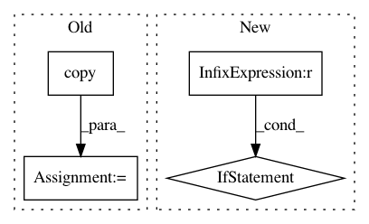

2e3655e8a9b1e37fa6e29f11db02a6b53cfb5928,rllib/agents/ppo/tests/test_ppo.py,TestPPO,test_ppo_free_log_std,#TestPPO#,176
Before Change
if fw in ["tf2", "tf", "tfe"]:
batch = postprocess_ppo_gae_tf(policy, FAKE_BATCH.copy())
else:
batch = postprocess_ppo_gae_torch(policy, FAKE_BATCH.copy())
batch = policy._lazy_tensor_dict(batch)
policy.learn_on_batch(batch)
// Check the variable is updated.
After Change
init_std = get_value()
assert init_std == 0.0, init_std
batch = compute_gae_for_sample_batch(policy, FAKE_BATCH.copy())
if fw == "torch":
batch = policy._lazy_tensor_dict(batch)
policy.learn_on_batch(batch)
// Check the variable is updated.
post_std = get_value()
In pattern: SUPERPATTERN
Frequency: 4
Non-data size: 4
Instances
Project Name: ray-project/ray
Commit Name: 2e3655e8a9b1e37fa6e29f11db02a6b53cfb5928
Time: 2021-01-19
Author: sven@anyscale.io
File Name: rllib/agents/ppo/tests/test_ppo.py
Class Name: TestPPO
Method Name: test_ppo_free_log_std
Project Name: NifTK/NiftyNet
Commit Name: c8b28432a637a780eed96547260722ff3dede57e
Time: 2017-10-04
Author: wenqi.li@ucl.ac.uk
File Name: niftynet/engine/sampler_selective.py
Class Name:
Method Name: create_label_size_map
Project Name: ray-project/ray
Commit Name: 2e3655e8a9b1e37fa6e29f11db02a6b53cfb5928
Time: 2021-01-19
Author: sven@anyscale.io
File Name: rllib/agents/ppo/tests/test_ppo.py
Class Name: TestPPO
Method Name: test_ppo_loss_function
Project Name: ray-project/ray
Commit Name: b796de41049aa3b3696a6b7242799284c3f0c641
Time: 2021-01-20
Author: ed.nmi.oakes@gmail.com
File Name: python/ray/util/metrics.py
Class Name: Metric
Method Name: record